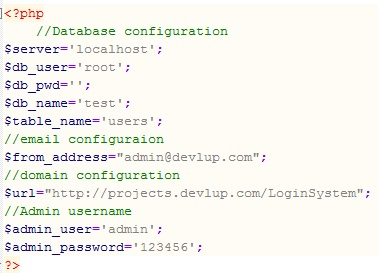
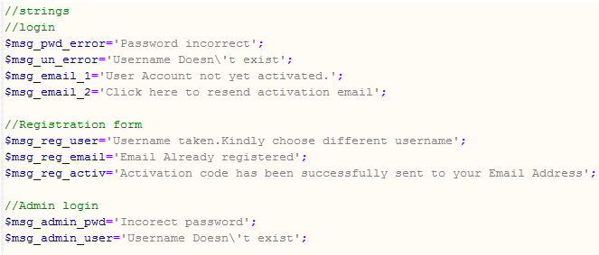
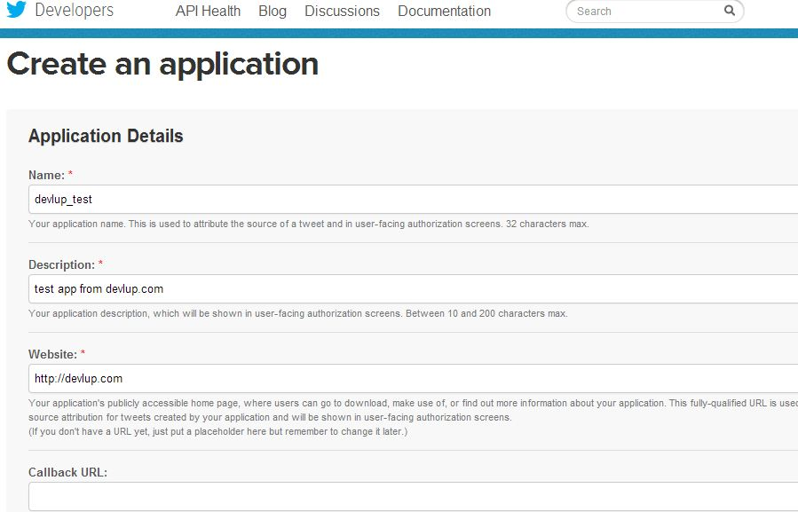

“Secure-PHP-Login & Registration System” Version 4
“Secure-PHP-Login & Registration System”
Created: 14/07/2013
Last Updated:27-Aug-2017
By: Jeyaganesh
Email: vikiganeshgandhi@gmail.com
Website: Devlup
Thank you for purchasing my item. If you have any questions that are beyond the scope of this help file, please feel free to email via my user page contact form here. Thanks so much!
Table of Contents
- File Structure
- Logo Text
- Database Script
- Configuration
- Error Messages
- Twitter Setup
- Facebook Setup
- Google Setup
- Admin Options
- Sources and Credits
A) File Structure - top
Login system consists of several PHP,Javascript and CSS files.
All the pages are made with the Bootstrap framework so the CSS and Javascript files are same as the Bootstrap.Don't modify the Js and CSS files that may cause some issues.
CSS
JS
Fonts
Social
img
B) Logo Text - top
You can change the logo text in the db.php file
C) Database Setup - top
You have to create two tables in MySql to begin with.Table creation script is available in the package
Execute the below scripts one by one
Script1create table users ( id int not null auto_increment primary key, username varchar(50) not null unique key, password varchar(100), email varchar(100), activ_status tinyint(1) default 0, activ_key varchar(1000) );Script2
create table users_social ( id int not null auto_increment primary key, username varchar(100), email varchar(100), source varchar(100) );
Once the table is created open the db.php file to modify the configuration file.
D) Configuration - top
In the configuration file specify the database username,password,table name etc.
$from_address specifies the from address for sending activation mails.$url specify the url of the login system deployed.
In the strings section you can modify the text of the messages displayed in the screens
E) Error Messages - top
In the configuration file specify the error messages for login,admin and registration screens
Please ensure to escape the single quote in the message should be properly escaped with '\'
F) Twitter Setup - top
Register a new application in http://dev.twitter.com/apps
Provide application name,description and call back url which is the url of login page
update the callback url to point to 'twitter_callback.php' with complete url
Save application and goto settings tab and check the box "Allow this application to be used to Sign in with Twitter" and click update setting
Now notedown the consumer secret and consumer key and update the db.php file.
G) Facebook Setup - top
Goto https://developers.facebook.com/apps
Click "Add a new app" button and select "website" option
Enter a name for this facebook app (any name) and click create new facebook app ID

click "skip quick start" button
Click "settings" and enter display name,contant email details
In "app domains" section you have enter your website domain name- example: devlup.com
In the "Site URL" section you need to enter complete URL of the facebook_connect.php file for example: http://devlup.com/loginsystem/facebook_connect.php
After creating application note down the app id and secret key and update the db.php file under facebook configuration section
H) Google Setup - top
Goto https://code.google.com/apis/console and create a new project and provide a name.
In the services screen enable access for Google+ API
In the API access screen, note API key,client id,email address,client secret and redirect uri's
Update the redirect url to point to 'google_connect.php' with complete url
Save all the information and update the db.php configuration
I) Admin - top
Admin screen contains the list of users registered in the system along with their activation status.This page can be accessed using the url admin_records.php
Please note that this page contains secure information and should only made available for administrators.If you dont need this feature kindly remove it while deploying.
For accessing the admin_records.php page the default user name and password is defined in the db.php configuration file.
I) Sources and Credits - top
Once again, thank you so much for purchasing. As I said at the beginning, I'd be glad to help you if you have any questions. but I'll do my best to assist.
If you want any new feature to be added.Please feel free to mail me.
Jeyaganesh